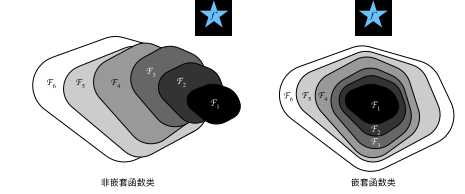
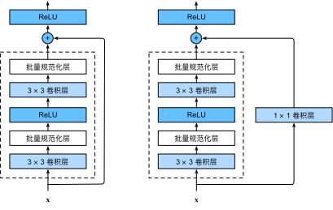

残差网络（ResNet）
:label:sec_resnet
随着我们设计越来越深的网络，深刻理解“新添加的层如何提升神经网络的性能”变得至关重要。更重要的是设计网络的能力，在这种网络中，添加层会使网络更具表现力， 为了取得质的突破，我们需要一些数学基础知识。
函数类
首先，假设有一类特定的神经网络架构$\mathcal{F}$，它包括学习速率和其他超参数设置。 对于所有$f \in \mathcal{F}$，存在一些参数集（例如权重和偏置），这些参数可以通过在合适的数据集上进行训练而获得。 现在假设$f^$是我们真正想要找到的函数，如果是$f^ \in \mathcal{F}$，那我们可以轻而易举的训练得到它，但通常我们不会那么幸运。 相反，我们将尝试找到一个函数$f^*_\mathcal{F}$，这是我们在$\mathcal{F}$中的最佳选择。 例如，给定一个具有$\mathbf{X}$特性和$\mathbf{y}$标签的数据集，我们可以尝试通过解决以下优化问题来找到它：
$$f^*_\mathcal{F} := \mathop{\mathrm{argmin} }_f L(\mathbf{X}, \mathbf{y}, f) \text{ subject to } f \in \mathcal{F}.$$
那么，怎样得到更近似真正$f^$的函数呢？
唯一合理的可能性是，我们需要设计一个更强大的架构$\mathcal{F}'$。
换句话说，我们预计$f^{\mathcal{F}'}$比$f^*{\mathcal{F} }$“更近似”。
然而，如果$\mathcal{F} \not\subseteq \mathcal{F}'$，则无法保证新的体系“更近似”。
事实上，$f^_{\mathcal{F}'}$可能更糟：
如 :numref:fig_functionclasses所示，对于非嵌套函数（non-nested function）类，较复杂的函数类并不总是向“真”函数$f^$靠拢（复杂度由$\mathcal{F}_1$向$\mathcal{F}_6$递增）。
在 :numref:fig_functionclasses的左边，虽然$\mathcal{F}_3$比$\mathcal{F}_1$更接近$f^*$，但$\mathcal{F}_6$却离的更远了。
相反对于 :numref:fig_functionclasses右侧的嵌套函数（nested function）类$\mathcal{F}_1 \subseteq \ldots \subseteq \mathcal{F}_6$，我们可以避免上述问题。

:label:fig_functionclasses
因此，只有当较复杂的函数类包含较小的函数类时，我们才能确保提高它们的性能。 对于深度神经网络，如果我们能将新添加的层训练成恒等映射（identity function）$f(\mathbf{x}) = \mathbf{x}$，新模型和原模型将同样有效。 同时，由于新模型可能得出更优的解来拟合训练数据集，因此添加层似乎更容易降低训练误差。
针对这一问题，何恺明等人提出了残差网络（ResNet） :cite:He.Zhang.Ren.ea.2016。
它在2015年的ImageNet图像识别挑战赛夺魁，并深刻影响了后来的深度神经网络的设计。
残差网络的核心思想是：每个附加层都应该更容易地包含原始函数作为其元素之一。
于是，残差块（residual blocks）便诞生了，这个设计对如何建立深层神经网络产生了深远的影响。
凭借它，ResNet赢得了2015年ImageNet大规模视觉识别挑战赛。
(残差块)
让我们聚焦于神经网络局部：如图 :numref:fig_residual_block所示，假设我们的原始输入为$x$，而希望学出的理想映射为$f(\mathbf{x})$（作为 :numref:fig_residual_block上方激活函数的输入）。
:numref:fig_residual_block左图虚线框中的部分需要直接拟合出该映射$f(\mathbf{x})$，而右图虚线框中的部分则需要拟合出残差映射$f(\mathbf{x}) - \mathbf{x}$。
残差映射在现实中往往更容易优化。
以本节开头提到的恒等映射作为我们希望学出的理想映射$f(\mathbf{x})$，我们只需将 :numref:fig_residual_block中右图虚线框内上方的加权运算（如仿射）的权重和偏置参数设成0，那么$f(\mathbf{x})$即为恒等映射。
实际中，当理想映射$f(\mathbf{x})$极接近于恒等映射时，残差映射也易于捕捉恒等映射的细微波动。
:numref:fig_residual_block右图是ResNet的基础架构--残差块（residual block）。
在残差块中，输入可通过跨层数据线路更快地向前传播。
 :label:
:label:fig_residual_block
ResNet沿用了VGG完整的$3\times 3$卷积层设计。 残差块里首先有2个有相同输出通道数的$3\times 3$卷积层。 每个卷积层后接一个批量规范化层和ReLU激活函数。 然后我们通过跨层数据通路，跳过这2个卷积运算，将输入直接加在最后的ReLU激活函数前。 这样的设计要求2个卷积层的输出与输入形状一样，从而使它们可以相加。 如果想改变通道数，就需要引入一个额外的$1\times 1$卷积层来将输入变换成需要的形状后再做相加运算。 残差块的实现如下：
from d2l import mxnet as d2l
from mxnet import np, npx
from mxnet.gluon import nn
npx.set_np()
class Residual(nn.Block): #@save
def __init__(self, num_channels, use_1x1conv=False, strides=1, **kwargs):
super().__init__(**kwargs)
self.conv1 = nn.Conv2D(num_channels, kernel_size=3, padding=1,
strides=strides)
self.conv2 = nn.Conv2D(num_channels, kernel_size=3, padding=1)
if use_1x1conv:
self.conv3 = nn.Conv2D(num_channels, kernel_size=1,
strides=strides)
else:
self.conv3 = None
self.bn1 = nn.BatchNorm()
self.bn2 = nn.BatchNorm()
def forward(self, X):
Y = npx.relu(self.bn1(self.conv1(X)))
Y = self.bn2(self.conv2(Y))
if self.conv3:
X = self.conv3(X)
return npx.relu(Y + X)
#@tab pytorch
from d2l import torch as d2l
import torch
from torch import nn
from torch.nn import functional as F
class Residual(nn.Module): #@save
def __init__(self, input_channels, num_channels,
use_1x1conv=False, strides=1):
super().__init__()
self.conv1 = nn.Conv2d(input_channels, num_channels,
kernel_size=3, padding=1, stride=strides)
self.conv2 = nn.Conv2d(num_channels, num_channels,
kernel_size=3, padding=1)
if use_1x1conv:
self.conv3 = nn.Conv2d(input_channels, num_channels,
kernel_size=1, stride=strides)
else:
self.conv3 = None
self.bn1 = nn.BatchNorm2d(num_channels)
self.bn2 = nn.BatchNorm2d(num_channels)
def forward(self, X):
Y = F.relu(self.bn1(self.conv1(X)))
Y = self.bn2(self.conv2(Y))
if self.conv3:
X = self.conv3(X)
Y += X
return F.relu(Y)
#@tab tensorflow
from d2l import tensorflow as d2l
import tensorflow as tf
class Residual(tf.keras.Model): #@save
def __init__(self, num_channels, use_1x1conv=False, strides=1):
super().__init__()
self.conv1 = tf.keras.layers.Conv2D(
num_channels, padding='same', kernel_size=3, strides=strides)
self.conv2 = tf.keras.layers.Conv2D(
num_channels, kernel_size=3, padding='same')
self.conv3 = None
if use_1x1conv:
self.conv3 = tf.keras.layers.Conv2D(
num_channels, kernel_size=1, strides=strides)
self.bn1 = tf.keras.layers.BatchNormalization()
self.bn2 = tf.keras.layers.BatchNormalization()
def call(self, X):
Y = tf.keras.activations.relu(self.bn1(self.conv1(X)))
Y = self.bn2(self.conv2(Y))
if self.conv3 is not None:
X = self.conv3(X)
Y += X
return tf.keras.activations.relu(Y)
#@tab paddle
from d2l import paddle as d2l
import warnings
warnings.filterwarnings("ignore")
import paddle
import paddle.nn as nn
from paddle.nn import functional as F
class Residual(nn.Layer): #@save
def __init__(self, input_channels, num_channels, use_1x1conv=False,
strides=1):
super(Residual, self).__init__()
self.conv1 = nn.Conv2D(input_channels, num_channels, kernel_size=3,
padding=1, stride=strides)
self.conv2 = nn.Conv2D(num_channels, num_channels, kernel_size=3,
padding=1)
if use_1x1conv:
self.conv3 = nn.Conv2D(input_channels, num_channels,
kernel_size=1, stride=strides)
else:
self.conv3 = None
self.bn1 = nn.BatchNorm2D(num_channels)
self.bn2 = nn.BatchNorm2D(num_channels)
self.relu = nn.ReLU()
def forward(self, X):
Y = F.relu(self.bn1(self.conv1(X)))
Y = self.bn2(self.conv2(Y))
if self.conv3:
X = self.conv3(X)
Y += X
return F.relu(Y)
如 :numref:fig_resnet_block所示，此代码生成两种类型的网络：
一种是当use_1x1conv=False时，应用ReLU非线性函数之前，将输入添加到输出。
另一种是当use_1x1conv=True时，添加通过$1 \times 1$卷积调整通道和分辨率。

:label:fig_resnet_block
下面我们来查看[输入和输出形状一致]的情况。
blk = Residual(3)
blk.initialize()
X = np.random.uniform(size=(4, 3, 6, 6))
blk(X).shape
#@tab pytorch
blk = Residual(3,3)
X = torch.rand(4, 3, 6, 6)
Y = blk(X)
Y.shape
#@tab tensorflow
blk = Residual(3)
X = tf.random.uniform((4, 6, 6, 3))
Y = blk(X)
Y.shape
#@tab paddle
blk = Residual(3, 3)
X = paddle.rand([4, 3, 6, 6])
Y = blk(X)
Y.shape
我们也可以在[增加输出通道数的同时，减半输出的高和宽]。
blk = Residual(6, use_1x1conv=True, strides=2)
blk.initialize()
blk(X).shape
#@tab pytorch
blk = Residual(3,6, use_1x1conv=True, strides=2)
blk(X).shape
#@tab tensorflow
blk = Residual(6, use_1x1conv=True, strides=2)
blk(X).shape
#@tab paddle
blk = Residual(3, 6, use_1x1conv=True, strides=2)
blk(X).shape
[ResNet模型]
ResNet的前两层跟之前介绍的GoogLeNet中的一样： 在输出通道数为64、步幅为2的$7 \times 7$卷积层后，接步幅为2的$3 \times 3$的最大汇聚层。 不同之处在于ResNet每个卷积层后增加了批量规范化层。
net = nn.Sequential()
net.add(nn.Conv2D(64, kernel_size=7, strides=2, padding=3),
nn.BatchNorm(), nn.Activation('relu'),
nn.MaxPool2D(pool_size=3, strides=2, padding=1))
#@tab pytorch
b1 = nn.Sequential(nn.Conv2d(1, 64, kernel_size=7, stride=2, padding=3),
nn.BatchNorm2d(64), nn.ReLU(),
nn.MaxPool2d(kernel_size=3, stride=2, padding=1))
#@tab tensorflow
b1 = tf.keras.models.Sequential([
tf.keras.layers.Conv2D(64, kernel_size=7, strides=2, padding='same'),
tf.keras.layers.BatchNormalization(),
tf.keras.layers.Activation('relu'),
tf.keras.layers.MaxPool2D(pool_size=3, strides=2, padding='same')])
#@tab paddle
b1 = nn.Sequential(nn.Conv2D(1, 64, kernel_size=7, stride=2, padding=3),
nn.BatchNorm2D(64), nn.ReLU(),
nn.MaxPool2D(kernel_size=3, stride=2, padding=1))
GoogLeNet在后面接了4个由Inception块组成的模块。 ResNet则使用4个由残差块组成的模块，每个模块使用若干个同样输出通道数的残差块。 第一个模块的通道数同输入通道数一致。 由于之前已经使用了步幅为2的最大汇聚层，所以无须减小高和宽。 之后的每个模块在第一个残差块里将上一个模块的通道数翻倍，并将高和宽减半。
下面我们来实现这个模块。注意，我们对第一个模块做了特别处理。
def resnet_block(num_channels, num_residuals, first_block=False):
blk = nn.Sequential()
for i in range(num_residuals):
if i == 0 and not first_block:
blk.add(Residual(num_channels, use_1x1conv=True, strides=2))
else:
blk.add(Residual(num_channels))
return blk
#@tab pytorch
def resnet_block(input_channels, num_channels, num_residuals,
first_block=False):
blk = []
for i in range(num_residuals):
if i == 0 and not first_block:
blk.append(Residual(input_channels, num_channels,
use_1x1conv=True, strides=2))
else:
blk.append(Residual(num_channels, num_channels))
return blk
#@tab tensorflow
class ResnetBlock(tf.keras.layers.Layer):
def __init__(self, num_channels, num_residuals, first_block=False,
**kwargs):
super(ResnetBlock, self).__init__(**kwargs)
self.residual_layers = []
for i in range(num_residuals):
if i == 0 and not first_block:
self.residual_layers.append(
Residual(num_channels, use_1x1conv=True, strides=2))
else:
self.residual_layers.append(Residual(num_channels))
def call(self, X):
for layer in self.residual_layers.layers:
X = layer(X)
return X
#@tab paddle
def resnet_block(input_channels, num_channels, num_residuals,
first_block=False):
blk = []
for i in range(num_residuals):
if i == 0 and not first_block:
blk.append(
Residual(input_channels, num_channels, use_1x1conv=True,
strides=2))
else:
blk.append(Residual(num_channels, num_channels))
return blk
接着在ResNet加入所有残差块，这里每个模块使用2个残差块。
net.add(resnet_block(64, 2, first_block=True),
resnet_block(128, 2),
resnet_block(256, 2),
resnet_block(512, 2))
#@tab pytorch, paddle
b2 = nn.Sequential(*resnet_block(64, 64, 2, first_block=True))
b3 = nn.Sequential(*resnet_block(64, 128, 2))
b4 = nn.Sequential(*resnet_block(128, 256, 2))
b5 = nn.Sequential(*resnet_block(256, 512, 2))
#@tab tensorflow
b2 = ResnetBlock(64, 2, first_block=True)
b3 = ResnetBlock(128, 2)
b4 = ResnetBlock(256, 2)
b5 = ResnetBlock(512, 2)
最后，与GoogLeNet一样，在ResNet中加入全局平均汇聚层，以及全连接层输出。
net.add(nn.GlobalAvgPool2D(), nn.Dense(10))
#@tab pytorch
net = nn.Sequential(b1, b2, b3, b4, b5,
nn.AdaptiveAvgPool2d((1,1)),
nn.Flatten(), nn.Linear(512, 10))
#@tab tensorflow
# 回想之前我们定义一个函数，以便用它在tf.distribute.MirroredStrategy的范围，
# 来利用各种计算资源，例如gpu。另外，尽管我们已经创建了b1、b2、b3、b4、b5，
# 但是我们将在这个函数的作用域内重新创建它们
def net():
return tf.keras.Sequential([
# Thefollowinglayersarethesameasb1thatwecreatedearlier
tf.keras.layers.Conv2D(64, kernel_size=7, strides=2, padding='same'),
tf.keras.layers.BatchNormalization(),
tf.keras.layers.Activation('relu'),
tf.keras.layers.MaxPool2D(pool_size=3, strides=2, padding='same'),
# Thefollowinglayersarethesameasb2,b3,b4,andb5thatwe
# createdearlier
ResnetBlock(64, 2, first_block=True),
ResnetBlock(128, 2),
ResnetBlock(256, 2),
ResnetBlock(512, 2),
tf.keras.layers.GlobalAvgPool2D(),
tf.keras.layers.Dense(units=10)])
#@tab paddle
net = nn.Sequential(b1, b2, b3, b4, b5,
nn.AdaptiveAvgPool2D((1, 1)),
nn.Flatten(), nn.Linear(512, 10))
每个模块有4个卷积层（不包括恒等映射的$1\times 1$卷积层）。
加上第一个$7\times 7$卷积层和最后一个全连接层，共有18层。
因此，这种模型通常被称为ResNet-18。
通过配置不同的通道数和模块里的残差块数可以得到不同的ResNet模型，例如更深的含152层的ResNet-152。
虽然ResNet的主体架构跟GoogLeNet类似，但ResNet架构更简单，修改也更方便。这些因素都导致了ResNet迅速被广泛使用。
:numref:fig_resnet18描述了完整的ResNet-18。
 :label:
:label:fig_resnet18
在训练ResNet之前，让我们[观察一下ResNet中不同模块的输入形状是如何变化的]。 在之前所有架构中，分辨率降低，通道数量增加，直到全局平均汇聚层聚集所有特征。
X = np.random.uniform(size=(1, 1, 224, 224))
net.initialize()
for layer in net:
X = layer(X)
print(layer.name, 'output shape:\t', X.shape)
#@tab pytorch
X = torch.rand(size=(1, 1, 224, 224))
for layer in net:
X = layer(X)
print(layer.__class__.__name__,'output shape:\t', X.shape)
#@tab tensorflow
X = tf.random.uniform(shape=(1, 224, 224, 1))
for layer in net().layers:
X = layer(X)
print(layer.__class__.__name__,'output shape:\t', X.shape)
#@tab paddle
X = paddle.rand(shape=(1, 1, 224, 224))
for layer in net:
X = layer(X)
print(layer.__class__.__name__,'output shape:\t', X.shape)
[训练模型]
同之前一样，我们在Fashion-MNIST数据集上训练ResNet。
#@tab all
lr, num_epochs, batch_size = 0.05, 10, 256
train_iter, test_iter = d2l.load_data_fashion_mnist(batch_size, resize=96)
d2l.train_ch6(net, train_iter, test_iter, num_epochs, lr, d2l.try_gpu())
小结
- 学习嵌套函数（nested function）是训练神经网络的理想情况。在深层神经网络中，学习另一层作为恒等映射（identity function）较容易（尽管这是一个极端情况）。
- 残差映射可以更容易地学习同一函数，例如将权重层中的参数近似为零。
- 利用残差块（residual blocks）可以训练出一个有效的深层神经网络：输入可以通过层间的残余连接更快地向前传播。
- 残差网络（ResNet）对随后的深层神经网络设计产生了深远影响。
练习
- :numref:
fig_inception中的Inception块与残差块之间的主要区别是什么？在删除了Inception块中的一些路径之后，它们是如何相互关联的？ - 参考ResNet论文 :cite:
He.Zhang.Ren.ea.2016中的表1，以实现不同的变体。 - 对于更深层次的网络，ResNet引入了“bottleneck”架构来降低模型复杂性。请试着去实现它。
- 在ResNet的后续版本中，作者将“卷积层、批量规范化层和激活层”架构更改为“批量规范化层、激活层和卷积层”架构。请尝试做这个改进。详见 :cite:
He.Zhang.Ren.ea.2016*1中的图1。 - 为什么即使函数类是嵌套的，我们仍然要限制增加函数的复杂性呢？
:begin_tab:mxnet
Discussions
:end_tab:
:begin_tab:pytorch
Discussions
:end_tab:
:begin_tab:tensorflow
Discussions
:end_tab:
:begin_tab:paddle
Discussions
:end_tab: